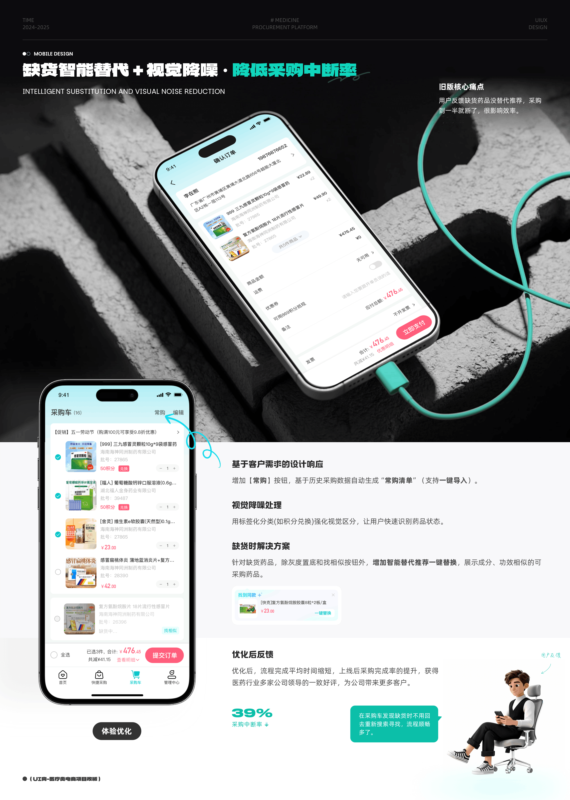
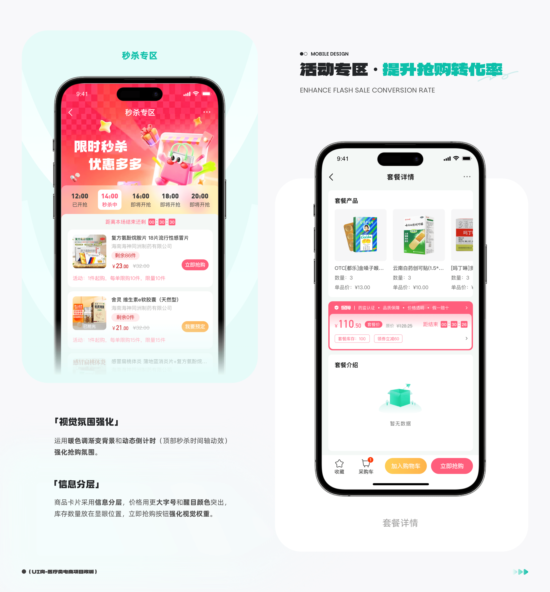
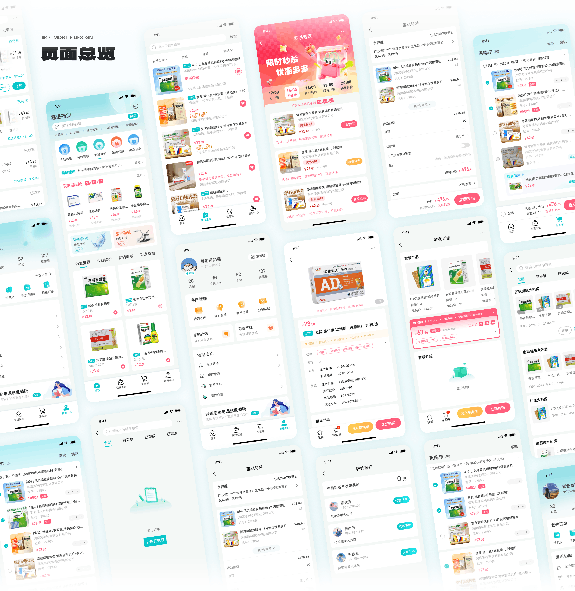
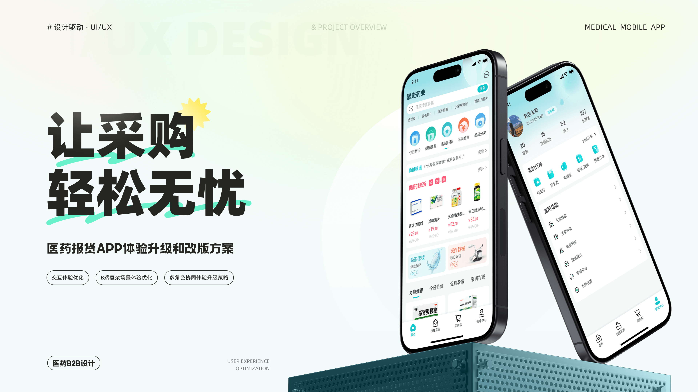

小程序
一款服务于医药采购商、分销商的B2B平台，通过移动互联网连接药企、医药流通企业与零售终端，致力于优化药品供应链、提升流通效率。公司亟需通过体验升级，提升用户留存与转化，强化平台在医药B2B领域的竞争力。
角色
UI / UX 设计师
年份
2020
客户
医药公司
周期
6 周

设计过程
重新梳理导航流程，用户操作步骤减少 40%。优先高频功能，简化决策路径。
基于 8px 网格构建完整设计系统，统一的圆角规范与克制的单色配色方案。
精心设计的过渡动效与反馈机制，让界面富有响应感而不分散注意力。



设计规范
一级标题
64px / 700 / 1.1
二级标题
40px / 600 / 1.2
三级标题
24px / 500 / 1.3
正文内容，用于长篇阅读场景。
16px / 400 / 1.7
辅助文字与次要信息。
14px / 400 / 1.5
标签文字
12px / 500 / 1.4